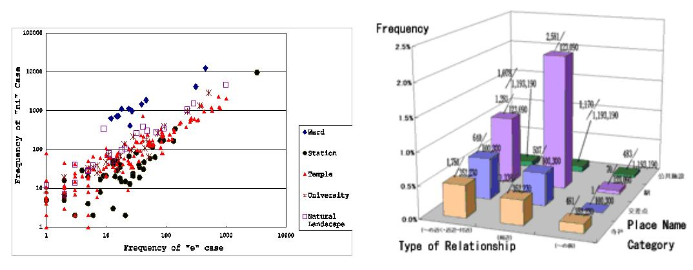
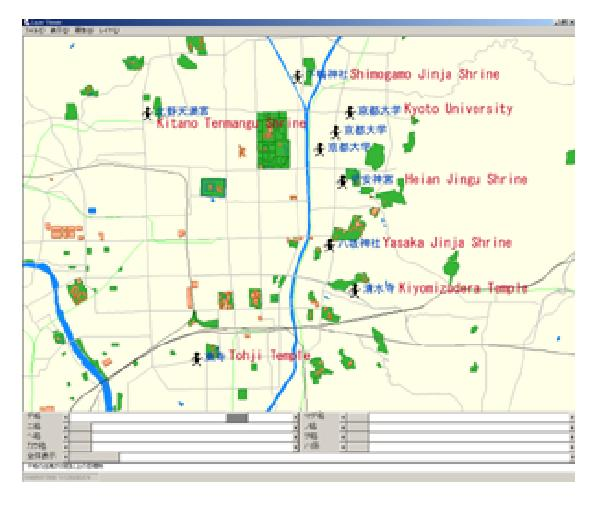

A mental image of a city is different from its physical structure. The elements of the city image include nodes, edges, paths, districts and landmarks. Because such cognitive information can be used as a basis for city navigation and regional information search, there has been some research on cognitive geography as collected from questionnaires. Our research utilizes the large document set available through the World Wide Web and automatically extract from it cognitive geographic information
In general, geographic information is expressed by either maps or sentences. Web contains many spatial sentences. Because a full understanding of such sentences is difficult, we focused on partial sentence structures. For example, if the expression Ågnear XÅh frequently occurs, place name X can be considered as a landmark candidate. In order to discern the relationships between landmarks and spatial expressions, we divided landmarks into 4 categories and compared how the members of each category are used in spatial expressions. The result is shown in Figure 1. Members of the station category frequently co-occur with the prepositions ÅgaroundÅh and ÅgfromÅh, and not as much with Ågin front ofÅh. On the other hand, members of the ward category are seldom used with the preposition ÅgtoÅh, while members of the temple and shrine categories have high co-occurrence with the preposition ÅgatÅh.

Figure 1. Extraction of Landmark Attributes from Spatial Expressions
Such co-occurrence information enables us to assign cognitive attributes to geographic objects. For example, stations when used with ÅgatÅh are important as sites of action, while stations with ÅgfromÅh are important as origins of movement. We have developed visualization tools for such cognitive categorization, as shown in Figure 2. The user can choose which cognitive type or types of geographic objects are to be shown on the map. For example, local residents and tourists will have different preferences.

Figure 2. Visualization Interface for Landmark Characterization
The co-occurrence relationships between place names were also used for grouping place names. By creating a graph structure where nodes are place names and edges are drawn when place names at both ends are close enough and exhibit co-occurrence, subgraphs with higher connectivity often match regions with specific characteristics. At the same time, nodes with a high degree of connection are often landmarks. We used this method to extract both regions and the landmarks from the target area.
Publications:
Taro Tezuka, Ryong Lee, Hiroki Takakura and Yahiko Kambayashi. Acquisition of Landmark Knowledge from Spatial Description. Proceedings of 2002 IRC International Conference on Internet Information Retrieval, pp.214-221, 2002.
Taro Tezuka, Ryong Lee, Hiroki Takakura and Yahiko Kambayashi. Cognitive Characterization of Geographic Objects Based on Spatial Descriptions in Web Resources. Workshop on Spatial Data and Geographic Information Systems(SpaDaGIS), 2003.
Contact:
Taro Tezuka (tezuka at dl.kuis.kyoto-u.ac.jp)
Yusuke Yokota (yyokota at i.kyoto-u.ac.jp)
Dept. of Social Informatics, Kyoto University